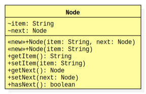

A node for an item in a linked list data structure. Each node contains an
item and may refer to another node in the structure (known as the
"next" node).

UML Diagram for Node
Examples
In this example, we construct a linked list using two newly-created
Node objects. The second node becomes the new head of the
linked list.
Node head = new Node("a"); // head → Node(a, null)
head = new Node("b", head); // head → Node(b) → Node(a, null)
System.out.printf("head → %s\n", head);
In this example, we construct a linked list using two newly-created
Node objects. The second node becomes the new tail of the
linked list.
Node head = new Node("a"); // head → Node(a, null)
head.setNext(new Node("b")); // head → Node(a) → Node(b, null)
System.out.printf("head → %s\n", head);
Very Important Note
You do not need to write the .java file
for this class (nor should you)!
A compiled version of this
Node class is made available to you in a JAR file that is
distributed alongside the project description. Simply follow the instructions
in that document to get and use the JAR file.